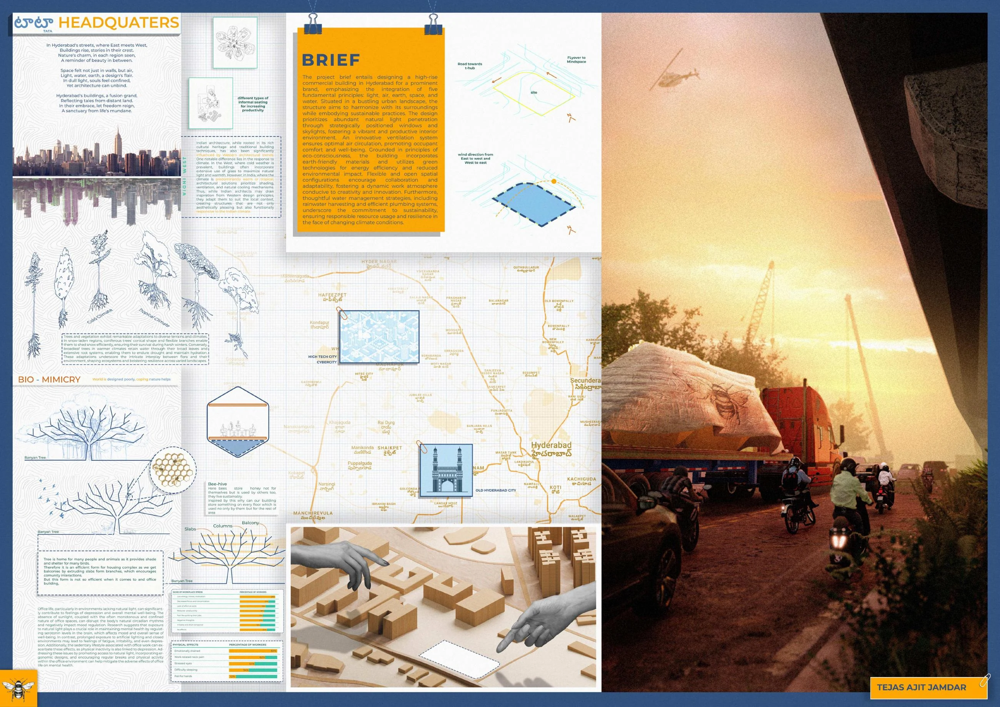
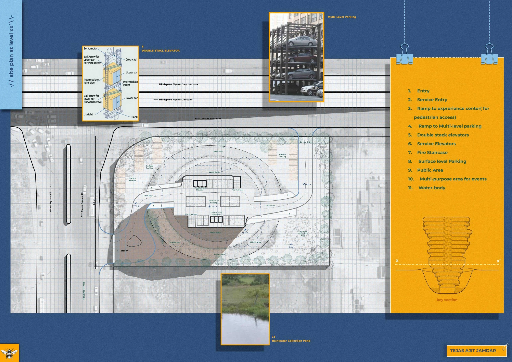
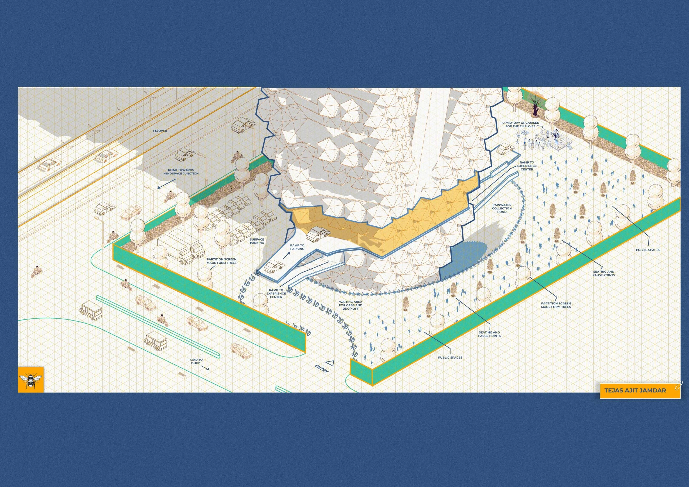
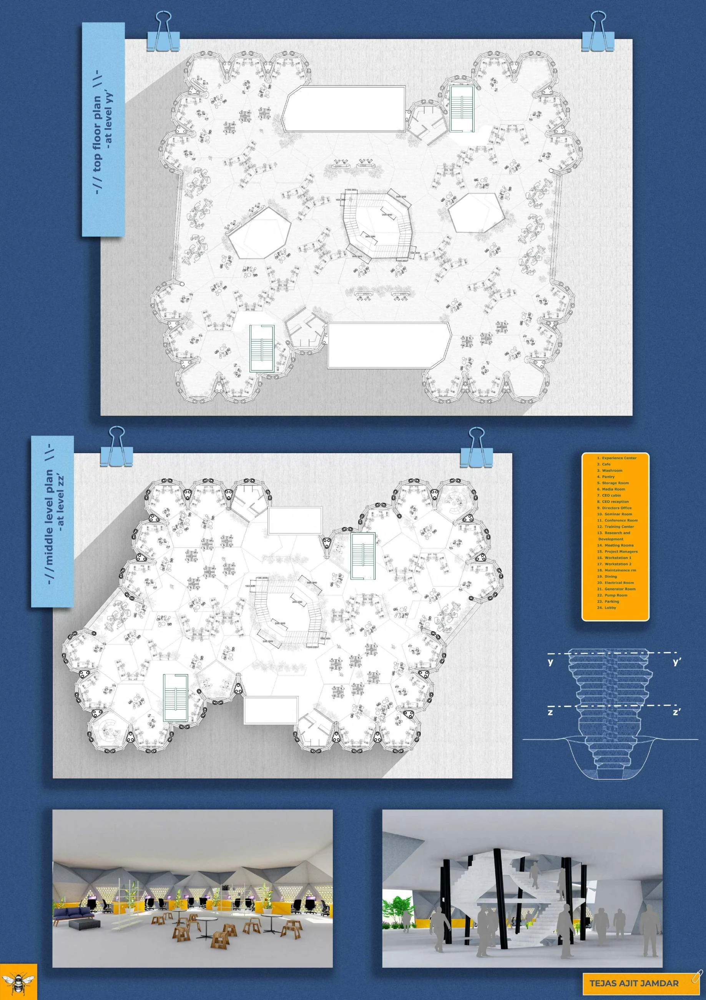
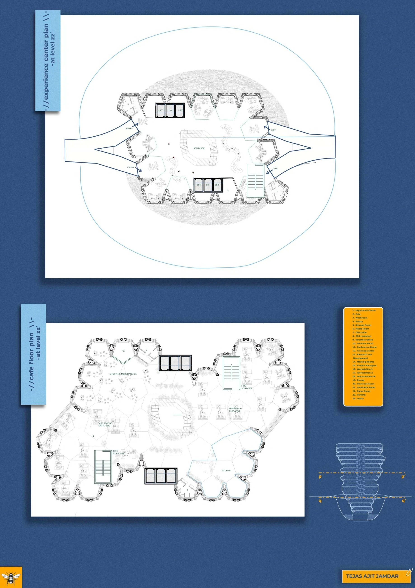
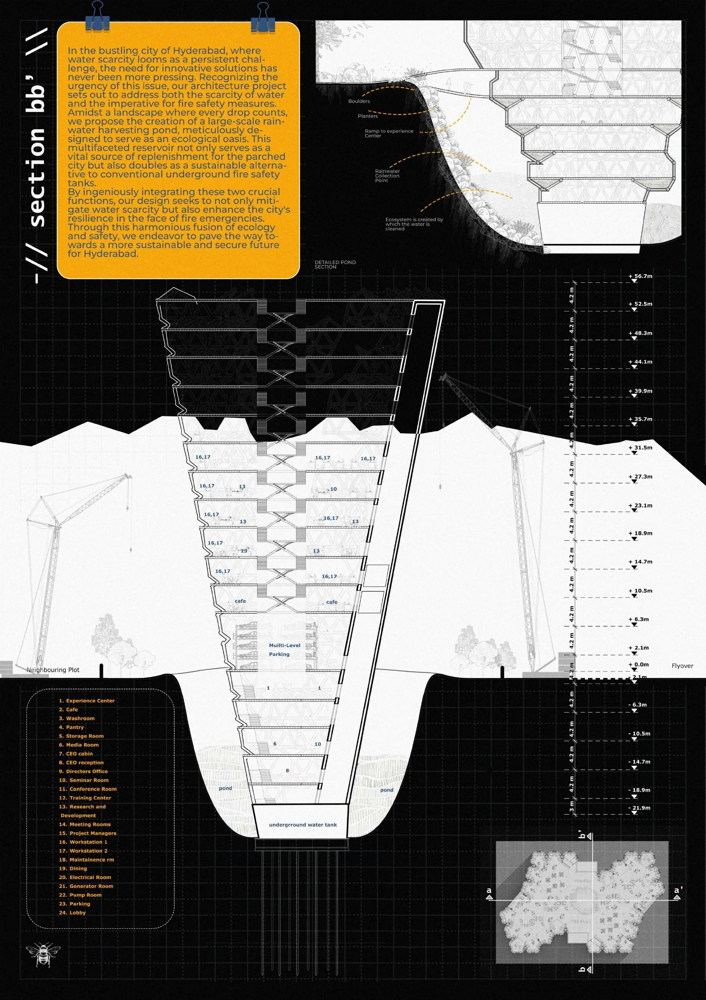
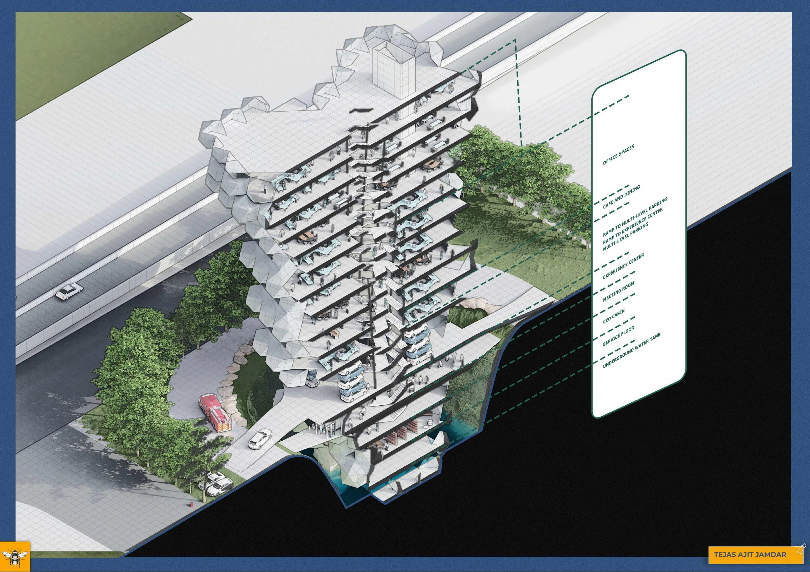
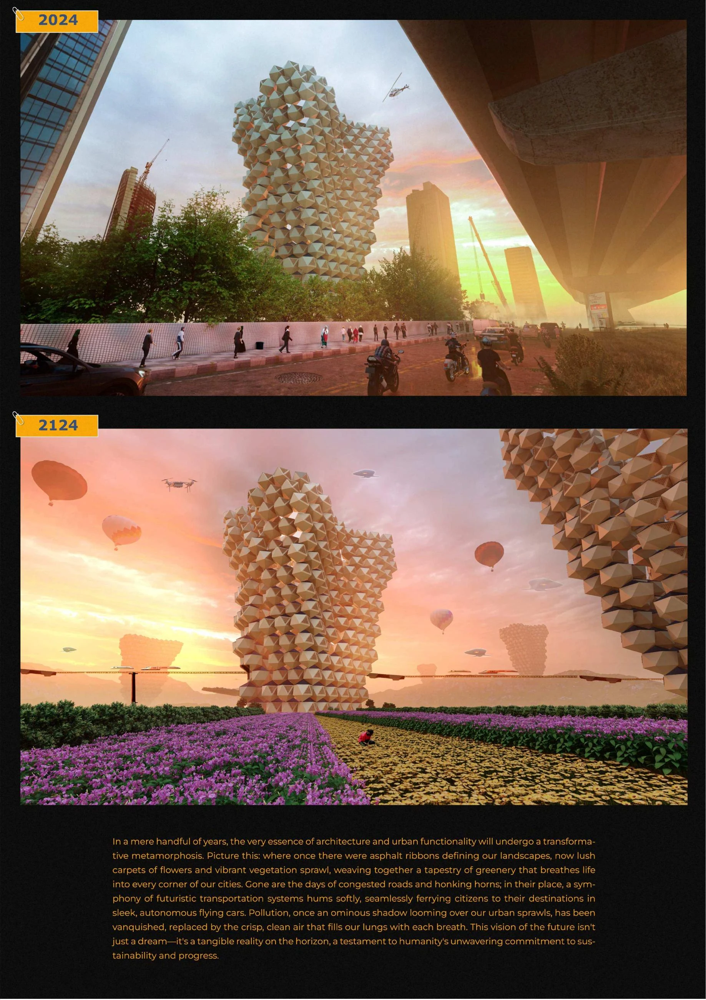
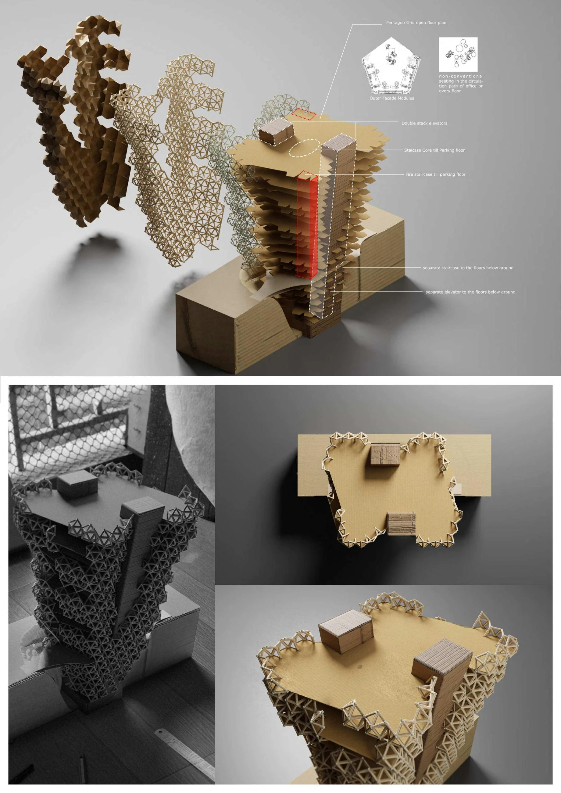

Academic Architecture · Tejas Ajit Jamdar
Hive
WHY CAN’T WE DESIGN OUR OWN SKYLINE?
Hive is an academic architecture project by Tejas Ajit Jamdar, shaped around the question “Why can’t we design our own skyline?” It explores architectural form through the relationship between individual design choices and the larger skyline.
The project received a Rookies Silver Medal and was a Transparence National Finalist. Browse the original presentation sheets below to follow the proposal, and visit the interactive gallery to see its three-dimensional model.
Recognition
ROOKIES – SILVER MEDAL, TRANSPARENCE NATIONAL FINALIST
Project credits
ACADEMIC
Explore the interactive 3D portfolio →Project presentation









